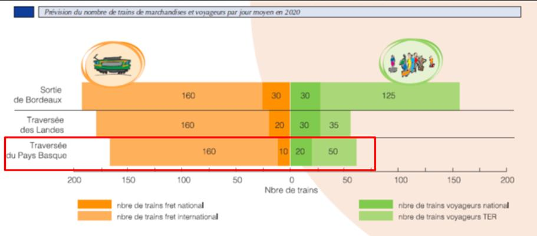

Le report modal massif vers le train : quels enjeux pour le climat ?
Tout le monde est conscient que le secteur des transports (voyageurs et marchandises tous modes confondus)
représente le premier secteur émetteur de gaz à effet de serre et fortement émetteur de produits
polluants.
Pour justifier la construction d’une LGV, on parie sur un report modal massif générateur
d’un gain d’émissions de gaz à effet de serre mais les promoteurs occultent soigneusement le fait que la
construction d’une telle infrastructure génère, elle aussi, des émissions de GES.
Réseau Ferré de France (RFF) a réalisé, avec la participation de l’Agence de l'environnement et de la
maîtrise de l'énergie (ADEME), un bilan carbone ferroviaire qui estime les émissions provoquées par la
construction de la branche est de la LGV Rhin-Rhône.
Pour la construction de 140 kilomètres de LGV c’est près de 1 200 000 tonnes équivalentes de CO2 qui ont
été émises dont la moitié par les matériaux entrants (chaux, ciment, acier, etc.) – soit près de 8 000
tonnes équivalentes de CO2 pour la construction d’un kilomètre de LGV.
Ce bilan carbone montrait, avant l’ouverture au trafic en 2011, qu’il fallait attendre 12 années
de trafic pour compenser, par la baisse des émissions de CO2 permises par la LGV, les émissions
liées au chantier de construction.
Comme le souligne Yves Crozet, économiste, spécialiste reconnu de l'économie des transports et des
services publics : « comme les trafics sont très inférieurs aux estimations initiales, il
faudra 25 années au moins pour arriver à ce
résultat.» (Source : Yves
Crozet, « Les métamorphoses du modèle économique de la grande vitesse ferroviaire », Bulletin de la Sabix,
68 | 2022, p134)
Cela montre la fiabilité discutable des bilans carbone des LGV trop dépendants des prévisions de
trafic.
Augmenter les capacités pour le fret ferroviaire ?
Ce qu'ils disent :
« En libérant des sillons sur les lignes existantes, les lignes nouvelles permettent d’augmenter les capacités du fret ferroviaire sur ces mêmes lignes existantes. »
Vérifions les faits.
Si la solution était aussi simple pour ne pas dire simpliste, il y a bien longtemps qu’elle aurait été mise en œuvre. C’est aussi l’opinion d’Yves Crozet, éminent spécialiste des transports, ancien membre du conseil d’administration de Réseau Ferré de France :
« Il est vrai que la création d’une nouvelle ligne ferroviaire dégage mécaniquement de la capacité sur les voies anciennes, notamment pour le fret. Mais si cela suffisait à dynamiser le fret ferroviaire, cela se saurait. C’est une autre forme de fétichisme de croire que la question de l’infrastructure est première alors que dans le ferroviaire en général, c’est l’organisation des entreprises ferroviaires qui est en cause. Et c’est de cela dont il faut parler pour comprendre pourquoi le fret ferroviaire en France a baissé de plus de 20% au cours des 10 dernières années alors qu’il a progressé de plus de 50% en Allemagne, pratiquement sans infrastructures nouvelles ! » (Source : Sud Ouest. La LGV ce n'est pas une baguette magique. 23/11/2010)
Les causes du déclin du fret ferroviaire sont connues : désindustrialisation, disparition des grands chargeurs (mines, aciéries…), abandon du wagon isolé, logistique très insuffisante de la desserte des ports, implantation des plateformes de distribution au croisement des autoroutes, à distance du réseau ferré, multiplication des sillons précaires, rigidité des réservations, souplesse du mode routier pour les entreprises…
Ce n’est pas une LGV qui va enrayer l’effondrement du fret ferroviaire.
Parallèlement, l’Espagne privilégie le transport routier pour les marchandises (20% au-dessus de la moyenne européenne). Dans la dernière décade le fret ferroviaire a diminué plus que dans les autres pays et c’est un des pays européens qui attire le moins de nouveaux opérateurs de transport ferroviaire
La Commission Nationale de la Compétence (CNC) a identifié les facteurs qui grèvent le fret ferroviaire. Parmi eux : les caractéristiques spécifiques des infrastructures qui contribuent à « isoler » le marché espagnol, à ralentir la circulation des trains, à limiter leur longueur, à réduire l’intermodalité du ferroviaire et du transport maritime (3% de report modal) à isoler le réseau conventionnel par l’absence de connexion avec la grande vitesse et à l’international les différences d’alimentation électrique, de système de sécurité et de signalisation. (Source : « Informe sobre la competencia en el transporte de mercancías por ferrocarril en España ». Comisión Nacional de la Competencia, 2012)
-
Accréditer l’idée que la péninsule ibérique mettant son réseau à l’écartement européen1 et que les chargeurs touchés par la grâce s’orienteront vers le ferroviaire sera un déferlement de trains de fret est un pur mensonge ! (La France a un écartement de rails aux normes européenne (UIC) alors que le réseau conventionnel ibérique doit poser un troisième rail pour être compatible avec le réseau européen.)
En 2006, le président du débat public sur le projet de nouvelle ligne entre Bordeaux et Hendaye, peu convaincu par les prévisions de trafic présentées par Réseau Ferré de France (RFF), a pris l’initiative de commanditer une étude indépendante auprès du cabinet suisse SMA+ Progtrans.
Voici les prévisions de trafic annoncées par RFF, à l'époque du débat public, pour 2023 :

Source : Débat public 2006 Projet ferroviaire Bordeaux-Espagne chapitre 1.2 p.42En sortie de Bordeaux : 160 trains de fret national et 30 trains de fret international. Vous avez bien lu !
Les conclusions de l'étude indépendante sont sans appel :
« Dans son état actuel (et sans tenir de la gestion du nœud ferroviaire de Bordeaux), la ligne Bordeaux-Hendaye permet d’absorber des charges de trafic qui se situent entre 60% et 80% (selon le tronçon pris en compte) des volumes prévus par RFF à l’horizon 2020. L’aménagement de la signalisation entre Dax et Bayonne (pour permettre à des trains de se suivre à 4 minutes l’un de l’autre contre une dizaine actuellement) et l’aménagement ou la création de 3 voies d’évitement pour les trains de fret (pour permettre leur dépassement par des trains plus rapides) accroissent les capacités disponibles […] D’autres aménagements ponctuels complémentaires (aiguillages, évitements…) pourraient encore améliorer les conditions d’exploitation. » (Source : Expertise indépendante concernant le projet ferroviaire Bordeaux-Espagne, SMA+ Progtrans, 14 décembre 2006.)
« Globalement les prévisions de transport de marchandises par le rail à l’horizon 2020 (NDLR date initiale de la mise en service de l’Y basque) sont donc jugées optimistes et un scénario prévoyant des hypothèses plus prudentes serait souhaitable […] La capacité rendue disponible grâce à des aménagements mineurs de la ligne existante permet de répondre à la demande globale retenue par RFF à l’horizon 2020 dans des conditions qualitatives acceptables »
Faut-il rappeler le fiasco de l’exploitation de la LGV Perpignan-Figueras. L’opérateur ferroviaire et constructeur de la ligne, TP Ferro, a fait faillite après 4 ans d’exploitation « faute de trafic » : 12% du trafic voyageurs prévu et 7% du trafic fret prévu ! Pourtant l’interopérabilité à la frontière était assurée. Ces surestimations évidentes du trafic ont abusé l'opérateur TP Ferro mais aussi l'Europe dans l’octroi de subventions. Le même scénario se profile avec le GPSO.
Pour approfondir la question
-
Que l’on ne se méprenne pas les collectifs opposants au GPSO sont pour le report modal de la route vers le rail entre l’Espagne et la France, mais ils partage les réserves émises par les auteurs d’un récente étude sur le fret ferroviaire sur le corridor atlantique dont la commission européenne est destinataire. (Source : Etude du transport des marchandises sur le corridor atlantique. Mars 2021. GEIE Atlantic Corridor MA19-002)
Cette étude prévoit, pour 2030, selon le scénario retenu, entre 5 000 et 6 400 trains par an (soit 17 à 21 trains par jour sur une base de 300 jours ouvrés). Les auteurs estiment que le nombre total de trains internationaux sur le RFC Atlantic n’augmenterait que de +20% entre 2018 et 2030 et que le trafic ferroviaire transpyrénéen ne devrait, « revenir en 2030 qu'au niveau de 2006 » !
Actuellement, il circule entre Bordeaux et Hendaye 14 trains de fret par jour,7 par sens, (Source SNCF Réseau)
Les auteurs estiment que :
- le nombre total de trains internationaux sur le RFC Atlantic n’augmenterait que de +20% entre 2018 et 2030 et que le trafic ferroviaire transpyrénéen ne devrait « revenir en 2030 qu'au niveau de 2006 » ;
- « Le potentiel de report modal vers le rail sur le Corridor Atlantique est limité par les problèmes rencontrés par le secteur ferroviaire en France où les travaux récurrents sur les infrastructures et les grèves nationales réduisent considérablement la fiabilité des sillons et la compétitivité du rail […] Il n'y a aujourd'hui aucune raison de croire que ces problèmes vont s’améliorer dans un proche avenir »
Les auteurs concluent : « Il est donc douteux que l'objectif européen d'augmenter le trafic de fret ferroviaire de 50 % d'ici 2030, tel qu'énoncé dans la stratégie de mobilité durable et intelligente 2020 publiée par la Commission européenne, puisse être réalisée sur le corridor atlantique tant que ces problèmes persisteront. »
Ils précisent : « la croissance de la demande ne devrait pas être un moteur important de la croissance du trafic le long du corridor atlantique au cours de la prochaine décennie en raison de l'impact de la récession liée à la pandémie.
Cette étude date de 2021 et ne prend pas en compte l’impact de la récession économique due au conflit en Ukraine qui assombrit encore les perspectives de croissance.
-
En 2023, la Cour européenne des comptes publie un nouveau rapport sur le transport intermodal des marchandises au sein de l’UE. Tout aussi décapant !
Le transport de marchandises en Europe reste très largement dominé par les camions. Et les objectifs que s'est fixés la Commission européenne pour le train et le fluvial sont "irréalistes" en l'état actuel du réseau européen. (Source : Transport intermodal de marchandises L’UE peine encore à restreindre le fret routier. 27 mars 2023.)
L’intermodalité, qui consiste à combiner plusieurs modes de transport, constitue un élément clé de la décarbonation voulue par l’Union européenne. Pourtant "le transport de marchandises dans l’UE n’est pas sur les bons rails", en vient à conclure l'auteur de cet audit, qui a passé en revue 16 projets européens. En effet, le transport routier domine largement les échanges intra-européens, tout simplement parce qu’il est moins cher, plus rapide et plus flexible. Alors qu’il est aussi moins sûr et plus polluant. Aujourd’hui, il compte pour les trois quarts des transports de marchandises en Europe.
Entre 2010 et 2020, la part du rail et de la navigation a même diminué, passant de 25 à 23% du total du fret intérieur (hors aérien et maritime donc).
Derrière les bonnes intentions, l’Union européenne ne fait pas grand-chose. Lors de la précédente programmation européenne (2014-2020), elle a dépensé 1,1 milliard d’euros pour l’intermodalité.
Mais surtout, la Commission est accusée de ne pas avoir de stratégie. Les États membres agissent donc isolément, en élaborant leur propre stratégie.Les auteurs font ce constat : en 2011, la Commission européenne s’était donnée une valeur cible : réduire de 60% les émissions de CO2 issues des transports à horizon 2050 par rapport au niveau de 1990. En 2019, ces émissions ont au contraire grimpé de 24% ! L’UE table sur doublement du trafic ferroviaire et une augmentation de 50% de la navigation d’ici à 2050. Des objectifs jugés « irréalistes » par la Cour.
« En l’état actuel des choses, le réseau européen de transport de fret n’est tout simplement pas adapté à l’intermodalité » enfonce la Cour.
Voilà la réalité de la situation très éloignée de l’optimisme béat de nos présidents de région Alain Rousset et Carole Delga.
Capter les voyageurs des lignes aériennes
-
Pour la grande vitesse ferroviaire, le Livre blanc de l’Europe de 2011 listait les objectifs suivants : à l’horizon 2050, réaliser un véritable réseau européen de LGV afin que la majorité des déplacements intra-européens de moyenne distance se fasse en train et pas en avion ou en automobile ; dès 2030 le réseau de LGV devait tripler.
Cet objectif a été analysé par les auditeurs de la Cour européenne des comptes :
« Le plan à long terme actuel de la Commission, énoncé dans le livre blanc de 2011 et dans le règlement relatif au MIE (considérant 11), qui vise à tripler la longueur des lignes ferroviaires à grande vitesse dans l'UE d'ici à 2030 (de 9 700 km en 200819 à 30 750 km d'ici à 2030) n'est pas étayé par une analyse crédible. Compte tenu de l'état d'endettement des finances publiques nationales (les gouvernements des États membres sont les principaux investisseurs), du retour limité sur cet investissement public, et du temps nécessaire, dans la pratique, à la réalisation d'un investissement dans le transport ferroviaire à grande vitesse, il est très peu probable que l'objectif visant à tripler la longueur du réseau ferroviaire à grande vitesse soit atteint. »
-
Avec les compagnies low-cost, le transport aérien a réduit l’attractivité de la grande vitesse ferroviaire. Non pas à cause d’une concurrence directe point à point, mais du fait de l’incroyable diversification des destinations offertes aux clients. Pour décider de leurs vacances, les Européens ne commencent pas par choisir une destination, ils vont d’abord sur Internet regarder ce que proposent les compagnies aériennes. Le choix du mode précède de plus en plus souvent le choix de la destination. Cette évolution est manifeste en France. Selon Yves Crozet : "De 2008 à 2017, le trafic TGV a progressé de 12% alors qu’entre la métropole et l’Europe, on a compté 39% de passagers en plus. Le fait que de plus en plus d'aéroports soient connectés à une LGV a fait du TGV un complément du transport aérien et non un substitut comme l'énonçait le Livre blanc de 2011 !". (Source : "Les métamorphoses du modèle économique de la grande vitesse ferroviaire.", Yves Crozet, Bulletin de Sabix, 2022, page 14)
Laisser penser que le train peut remplacer l'avion est une erreur ne faisant que retarder la mise en place de politiques publiques indispensables à la transformation énergétique du secteur aérien. L'investissement collectif est nécessaire pour accélérer le déploiement plus large de technologies radicalement nouvelles telles que les avions électriques ou à hydrogène et pour généraliser l'usage des carburants aéronautiques durables. La décarbonation du transport aérien par les innovations technologiques et le développement des carburants alternatifs pourra de fait bénéficier au transport aérien dans son ensemble, vols long-courriers compris, qui représentent 80% des émissions de CO2 de l'aviation. (Source : "Report modal de l'avion vers le train : la grande illusion.", Thomas Juin, Président de l'Union des Aéroports Français (UAF), La Tribune, 12 janvier 2022).
Yves Crozet s’interroge sur l’extension européenne du réseau ferroviaire à grande vitesse :« La question se pose dans la mesure où l’extension se fait depuis le début du siècle au prix de rendements décroissants. Après un maximum de 21,9 millions de voyageurs.km par km de réseau, atteint en 2001, l’intensité du trafic a baissé en Europe de 50 % en 2016. » Source : « Les métamorphoses du modèle économique de la grande vitesse ferroviaire », Yves Crozet, Bulletin de la Sabix, 2022, p134
Et il ajoute : « Ainsi que l’a montré la Cour des comptes européenne, cela résulte de la mise en exploitation de lignes dont le potentiel est inférieur au seuil de pertinence d’une LGV, soit 9 millions de voyageurs par an.»
Ce seuil de pertinence a été étudié par la Cour européenne des comptes pour le projet de ligne Bordeaux-Vitoria
La viabilité économique des infrastructures ferroviaires à grande vitesse s’apprécie sur la référence établie par les universitaires, prenant en compte la population résidant dans la zone d'attraction à 60 minutes de trajet des lignes, soit 9 millions de personnes. Pour la ligne Bordeaux-Vitoria la population est de de 6,8 millions d’habitants. (Source : « Infrastructures de transport de l'UE : accélérer la mise en œuvre des mégaprojets pour générer l'effet de réseau dans les délais prévus », Rapport spécial 2020 de la Cour des comptes européenne, page 70.)
« Insuffisante pour assurer la viabilité à long terme » concluent les auditeurs de la Cour européenne des comptes (page 51 du rapport).